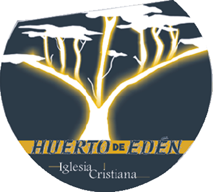
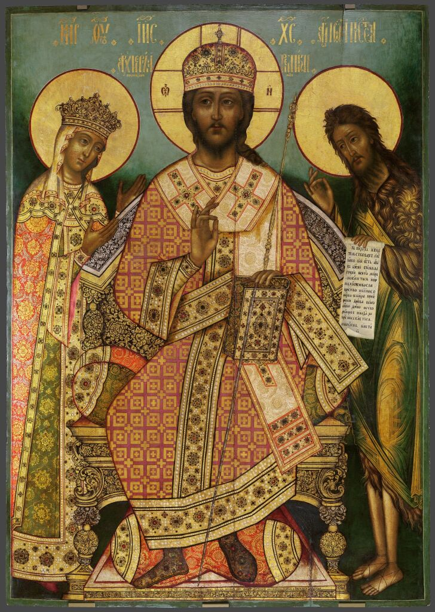
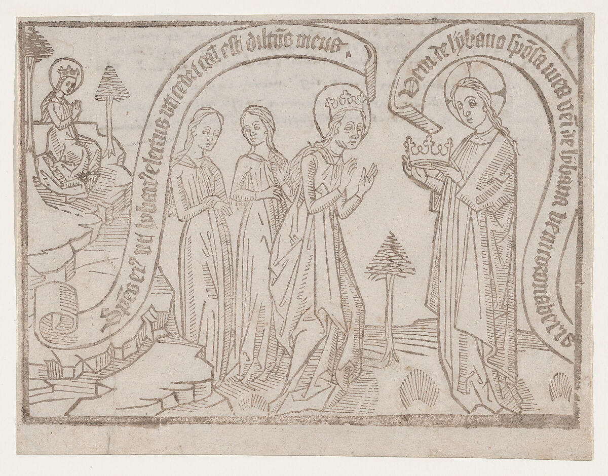
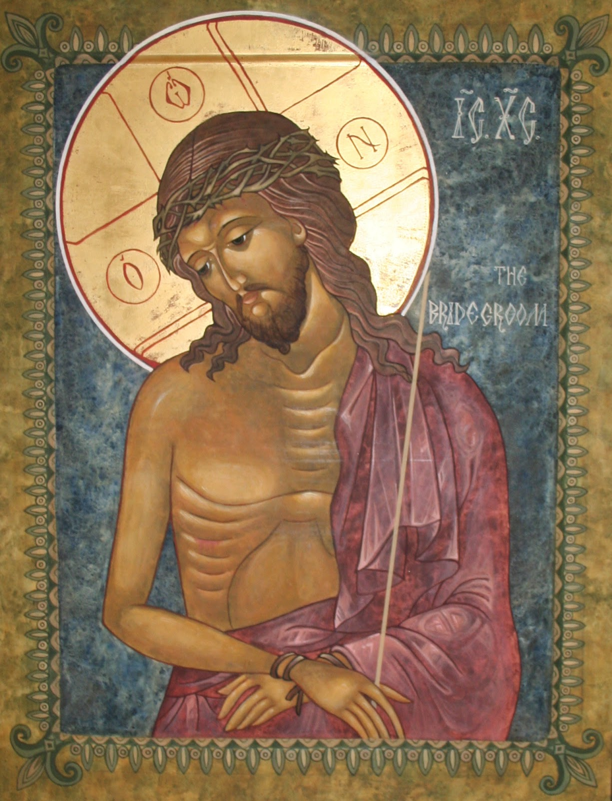
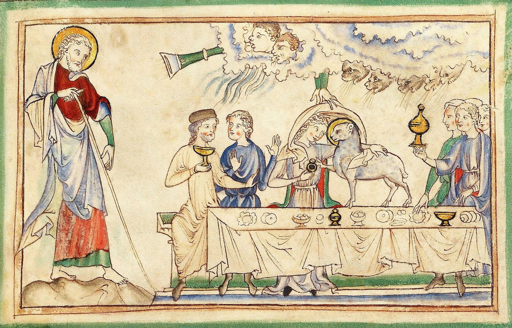
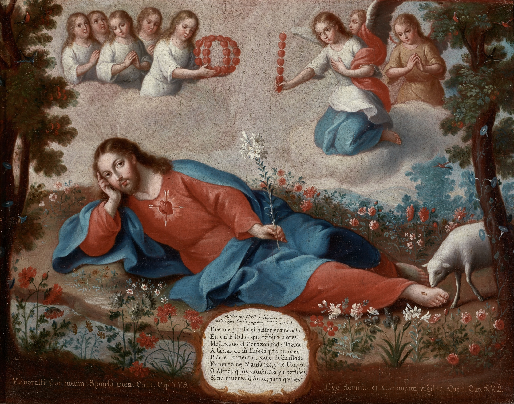

Pintura basada en El Salmo nupcial (Salmo 45:9) refleja la iconografía del canto para las bodas reales de los reyes de Israel. “La reina está a tu diestra con oro de Ofir”. De fondo el amigo del novio acompaña las nupcias.

Xilografía flamenca del Canticum Canticorum (ca. 1460). El Novio celestial ofrece la corona nupcial a la Esposa mientras proclama el llamado de amor de Cantares 4:8: “Ven del Líbano, esposa mía... ven y serás coronada”. En los filacterios dialogan los versos de Cantares 4:8 y 5:9.
¡Oh, cómo eres de hermosa, dulce Amada!,
y tus ojos son bellos y graciosos,
como de una paloma muy preciada,
entre esos tus copetes tan hermosos;
tu cabello parece una manada
de cabras y cabritos, que gozosos
del monte Galaad vienen bajando,
el pelo todo liso y relumbrando.
Los tus hermosos dientes parecían
un rebaño de ovejas muy preciado,
las cuales de bañarse ya venían
del río, el vellón viejo trasquilado,
tan blancas, tan parejas, que se vían
paciendo por el campo y por el prado;
estéril entre todas no la había,
dos cordericos cada cual traía.
Hilo de carmesí bello y polido
son los tus labios y tu hablar gracioso;
tus mejillas a mí me han parecido
un casco de granada muy hermoso;
y aquese blanco cuello liso, erguido,
castillo de David fuerte y vistoso;
mil escudos en él están colgados,
las armas de los fuertes, y estimados.
Los tus pechos dos blancos cabritillos
parecen, y mellizos, que paciendo
están entre violetas ternecillos,
en medio de las flores revolviendo;
mientras las sombras de aquellos cerrillos
huyen, y el día viene reluciendo,
voy al monte de mirra y al collado
del incienso a cogerle muy preciado.
Del todo eres hermosa, amiga mía,
no tiene falta alguna tu hermosura;
del Líbano desciende, mi alegría,
vente ya para mí, y esa espesura
de Hermón y Amana, que te tenía,
déjala de seguir, que es muy oscura,
donde se crían onzas y leones
en las oscuras cuevas y rincones.
Una morada bella ha edificado
para sí Salomón, de extraña hechura;
el su monte de Líbano ha cortado,
para de cedro hacer la cobertura;
de plata las columnas ha labrado,
y el techo de oro fino, y la moldura,
y el estrado de púrpura adornado
y en medio de él mi amor está asentado.
Salid, hijas de Sión, a porfía,
veréis a Salomón, Rey coronado,
con la corona rica, que en el día
de su gozo su madre le había dado.
El corazón, Esposa, me has robado;
en una sola vez que me miraste,
con el sartal del cuello le has atado.
¡Cuán dulce es el amor con que me amaste!
Más sabroso que el vino muy preciado.
¡Oh, cuán suave olor, que derramaste!
Panal están tus labios destilando
y en leche y miel tu lengua está nadando.
Tu vestido y arreo tan preciado
en su olor al del Líbano parece;
eres un huerto hermoso y bien cerrado,
que ninguno lo daña ni le empece:
fuente sellada que el que la ha gustado,
en el tu dulce amor luego enternece:
jardín todo plantado de granados,
de jazmín, mirra y nardos muy preciados,
Donde también el azafrán se cría,
canela y cinamomo muy gracioso,
con toda suavidad de especería,
linaloe con todo lo oloroso;
fuente eres de los huertos, alma mía;
pozo de vivas aguas muy sabroso,
que del Líbano bajan sosegadas
y en este pozo están muy reposadas.
Sus, vuela, cierzo; ¡ea!, no parezcas
por mi hermoso huerto, que he temor
que con tu dura fuerza me le empezcas,
llevándome mis frutos y mi olor;
ven, ábrego, que ablandes y enternezcas
mis plantas y derrames el su olor.
Venga a mi huerto y coja sus manzanas,
mi Amado, y comerá las muy tempranas.


Adónde te escondiste,
Amado, y me dexaste con gemido?
Como el ciervo huiste,
habiéndome herido;
salí tras ti clamando, y ya eras ido.
Pastores, los que fuerdes
allá por las majadas al otero,
si por ventura vierdes
aquel que yo más quiero,
decidle que adolezco, peno y muero.
Buscando mis amores
iré por esos montes y riberas,
ni cogeré las flores
ni temeré las fieras,
y pasaré los fuertes y fronteras.
¡Oh bosques y espesuras,
plantados por la mano del Amado,
oh prado de verduras,
de flores esmaltado,
decid si por vosotros ha pasado!
Mil gracias derramando
pasó por estos sotos con presura,
y, yéndolos mirando,
con sola su figura
vestidos los dexó de su hermosura.
¡Ay, quién podrá sanarme!
Acaba de entregarme ya de vero,
no quieras enviarme
de hoy más ya mensajero,
que no saben decirme lo que quiero.
Y todos cuantos vagan
de ti me van mil gracias refiriendo,
y todo más me llagan
y déxame muriendo
un no sé qué que quedan balbuciendo.
Mas, ¿cómo perseveras,
oh, vida, no viviendo donde vives
y haciendo porque mueras
las flechas me recibes
de lo que del Amado en ti concibes?
¿Por qué, pues, has llagado
a aqueste corazón, no lo sanaste?
Y pues me lo has robado,
¿por qué así lo dexaste
y no tomas el robo que robaste?
Apaga mis enojos,
pues que ninguno basta a desacellos,
y véante mis ojos,
pues eres lumbre dellos
y solo para ti quiero tenellos.
Descubre su presencia
y máteme tu vista y hermosura;
mira que la dolencia
de amor, que no se cura
sino con la presencia y la figura.
¡Oh cristalina fuente,
si en esos tus semblantes plateados
formases de repente
los ojos deseados
que tengo en mis entrañas dibujados!
Apártalos, Amado,
que voy de vuelo.
Vuélvete, paloma,
que el ciervo vulnerado
por el otero asoma,
el aire de tu vuelo, y fresco toma.
Mi Amado, las montañas,
los valles solitarios rumorosos,
la noche sosegada,
en par de los levantes de la aurora,
la música callada,
la soledad sonora,
la cena, que recrea y enamora.
Cazadnos las raposas,
que está ya florecida nuestra viña,
en tanto que de rosas
hacemos una piña,
y no parezca nadie en la montiña.
Detente, Cierzo muerto;
ven, austro, que recuerdas los amores;
aspira por mi huerto
y corran tus olores
y pacerá el Amado entre las flores.
Oh ninfas de Judea,
en tanto que en las flores y rosales
el ámbar perfumea,
mora en los arrabales,
y no queráis tocar nuestros umbrales.
Escóndete, Carillo,
y mira como tu has, a las montañas,
y no quieras decillo;
mas mira las compañas
de la que va per ínsulas extrañas.
A las aves ligeras,
leones, ciervos, gamos saltadores,
montes, valles, riberas,
aguas, aires, ardores,
y miedos en las noches veladores,
por las amenas liras
y cantos de sirena os conjuro,
que cesen vuestras iras,
y no toquéis al muro,
porque la Esposa duerma más segura.
Entrándose ha la esposa
en el ameno huerto deseado,
y a su sabor reposa,
el cuello reclinado
sobre los dulces brazos del Amado.
Debajo del manzano,
allí conmigo fuiste desposada,
allí te di la mano,
y fuiste reparada
donde tu madre fuera violada.
Nuestro lecho florido,
de cuevas de leones enlazado,
en púrpura teñido,
de paz edificado,
de mil escudos de oro coronado.
A zaga de tu huella
los jóvenes discurren el camino,
al toque de centella,
al adobado vino,
emisiones de bálsamo divino.
En la interior bodega
de mi Amado bebí, y cuando salía
por toda aquesta vega
ya cosa no sabía
y el ganado perdí que antes seguía.
Allí me dio su pecho,
allí me enseñó ciencia muy sabrosa,
y yo le di de hecho
a mí, sin dejar cosa,
allí le prometí de ser su esposa.
Mi alma se ha empleado
y todo mi caudal en su servicio.
Ya no guardo ganado
ni ya tengo otro oficio;
que ya sólo en amar es mi exercicio.
Pues ya si en el exido
de hoy más no fuere vista ni hallada,
diréis que me he perdido,
que andando enamorada
me hice perdidiza, y fui ganada.
De flores y esmeraldas,
en las frescas mañanas escogidas,
haremos las guirnaldas,
en tu amor florecidas
y en un cabello mío entretejidas.
En un solo cabello,
que en mi cuello volar considereste,
mirástele en mi cuello
y en él preso quedaste,
y en uno de mis ojos te llegaste.
Cuando tú me mirabas,
su gracia en mí tus ojos imprimían,
por eso me adamabas
y en eso merecían
los míos adorar lo que en ti vían.
No quieras despreciarme,
que si color moreno en mí hallaste,
ya bien puedes mirarme
después que me miraste,
que gracia y hermosura en mí dexaste.
La blanca palomica
al arca con el ramo se ha tornado,
y ya la tortolica
al socio deseado
en las riberas verdes ha hallado.
En soledad vivía,
y en soledad ha puesto ya su nido,
y en soledad la guía
a solas su querido,
también en soledad de amor herido.
Gocémonos, Amado,
y vámonos a ver en su hermosura
al monte y al collado
do mana el agua pura;
entremos más adentro en la espesura.
Y luego, a las subidas
cavernas de las piedras nos iremos,
que están bien escondidas,
y allí nos entraremos
y el mosto de granadas gustaremos.
Allí me mostrarías
aquello que mi alma pretendía,
y luego me darías
allí tú, vida mía,
aquello que me diste el otro día.
El aspirar del aire,
el canto de la dulce Filomena,
el soto y su donaire,
en la noche serena,
con llama que consume y no da pena.
Que nadie lo miraba,
Aminadab tampoco parecía,
y el cerco sosegaba,
y la caballería,
a vista de las aguas descendía.

Pintura virreinal de Andrés López (1811) inspirada en el Cantar de los Cantares. El Pastor enamorado reposa en un huerto de lirios mientras vela por su Esposa: “Yo dormía, pero mi corazón velaba”. Acompañado de una glosa mística en verso sobre el corazón herido por amor.